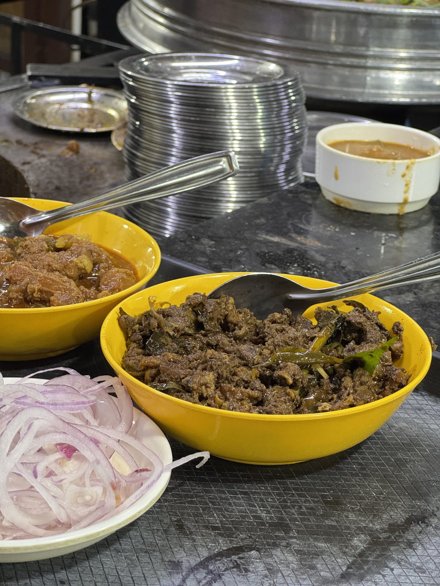
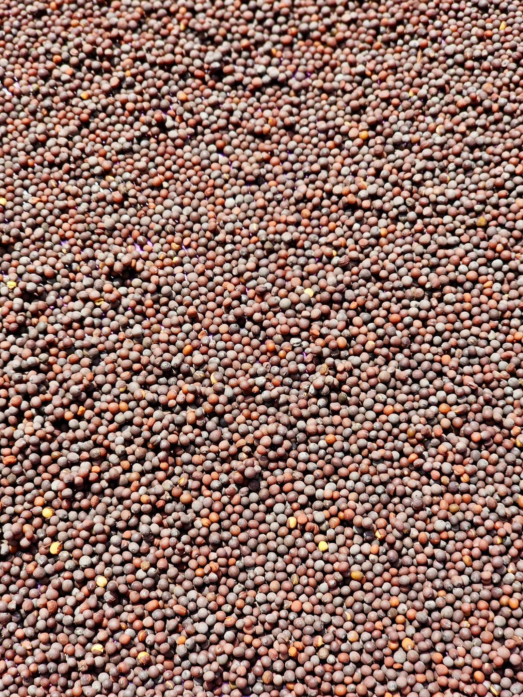

湖北台にできた、新しいスリランカ食堂

2025年11月、我孫子市湖北台、湖北駅からほど近い住宅街に、小さなスリランカ食堂がオープンしました。切り盛りするのは若いご夫婦。日本語堪能なスタッフが、ひとつひとつのご注文に丁寧に応えてくれます。
扉を開けると、明るく清潔なダイニング。スパイスの香りがふわりと漂う店内は、気取らずふらりと立ち寄れる雰囲気です。散歩やサイクリングの途中で、ふと立ち寄る方も少なくありません。
実はこのお店、スリランカ料理だけのお店ではありません。ランチタイムには、ほっとする和の丼ものメニューもご用意。異国の香りと、なじみのある和の味、どちらも同じ食卓で楽しめるのがASALIYAらしさです。
自分だけの一皿を、手で混ぜて。
ASALIYAの看板メニューは「ライス＆カレー」。パラパラに炊き上げたバスマティライスを中心に、チキンカレー、ダル（パリップ）カレー、日替わりの野菜カレー、そして副菜の小皿がぐるりと並びます。どれをどれだけのせるかは、あなた次第。スリランカでは、これを自分の手で盛り付け、混ぜ合わせて食べるのが日常の楽しみ方です。
盛り付ける
バスマティライスを中心に、チキンカレー・ダル（パリップ）カレー・日替わり野菜カレー・副菜を、お好きな小皿から好きなだけよそっていきます。
砕いて混ぜる
パパダン（豆せんべい）をパリパリと砕き入れるのが、本場流の楽しみ方。香ばしさとコクが加わり、味に立体感が生まれます。
手で味わう
ASALIYAでは手食も推奨。清潔なビニール手袋をご用意していますので、気軽に本場のスタイルを体験していただけます。もちろん、スプーンなどお好みのスタイルでも楽しんでいただけます。


辛さはしっかりめ、塩気は控えめ――そんな声をいただいています。ご来店のお客様からは「茄子が美味しかった」というお声も。初めての方にも安心して楽しんでいただける提供スタイルと、本格的なスリランカの味わい、その両方をあわせ持っているのがASALIYAの魅力です。
食後にはセイロンティーを一杯。スパイスの余韻を優しく包み込む、ほっとするひとときです。
හරිම රසයි
シンハラ語で「とても美味しい」という意味の言葉です。ご来店のお客様の口コミにも、この一言が添えられていました。
お客様の声
バスマティライスに数種のカレー、副菜を自分で盛り付けて混ぜていただきました。パパダンを砕いて混ぜるのが本当に楽しいです。
― Google口コミより
安くて美味しい、お酒も安いです。ライス＆カレーはチキンとダルのほか、日替わりの野菜カレーも楽しめました。
― Google口コミより
හරිම රසයි ― シンハラ語で「とても美味しい」の意味
手食推奨で、ビニール手袋も用意してくれています。しっかり辛く塩気は控えめで、茄子が美味しかったです。
― Google口コミより
店内は明るく清潔。日本語堪能な店員さんが、とても丁寧に対応してくださいました。
― Google口コミより
若い店主さんたちがとても素敵なお店でした。
― Google口コミより
ご利用案内
営業時間・定休日
営業時間・定休日は変更となる場合がございます。お電話にてご確認ください。
お支払い
クレジットカードがご利用いただけます。その他のキャッシュレス決済につきましては、お電話にてご確認ください。
駐車場
店舗裏手に2台分ご用意しています。
座席・お食事スタイル
手食（ビニール手袋あり）でもスプーンなどお好みのスタイルでも、自由にお楽しみいただけます。座席数など詳しくはお電話にてお問い合わせください。
アクセス
〒270-1132
千葉県我孫子市湖北台8丁目3-4
湖北駅から近く、散歩やサイクリングのついでにも立ち寄りやすい住宅街の中のお店です。駐車場は店舗裏手に2台分ございます。
070-8906-5512（タップで発信）